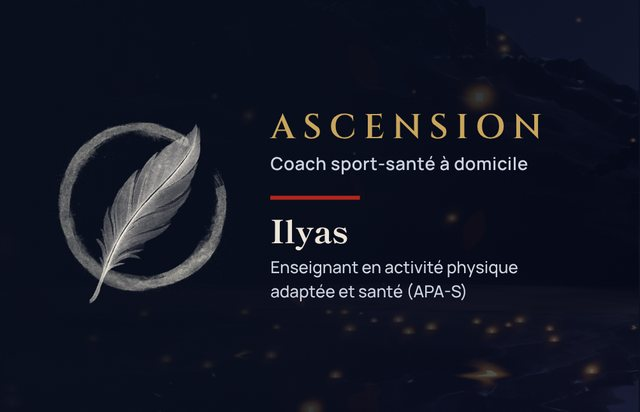
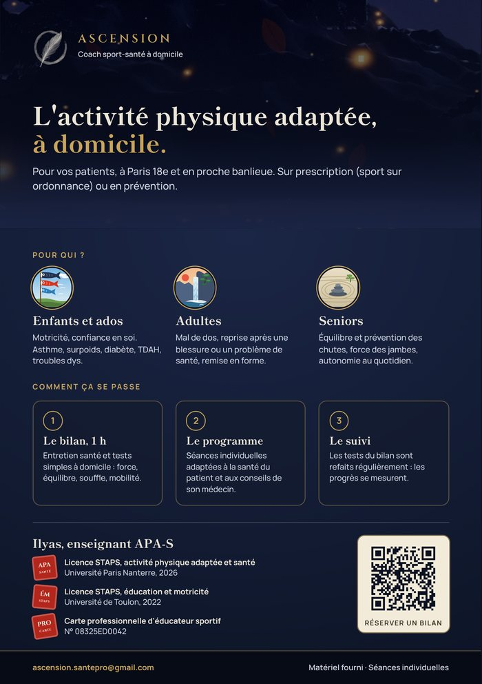
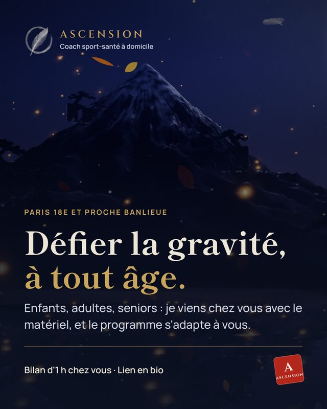
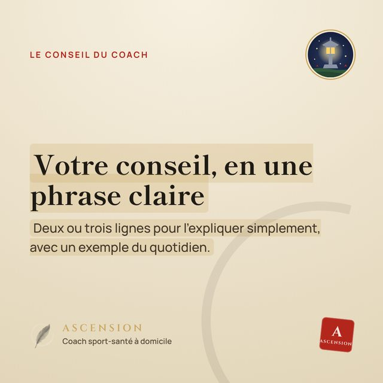
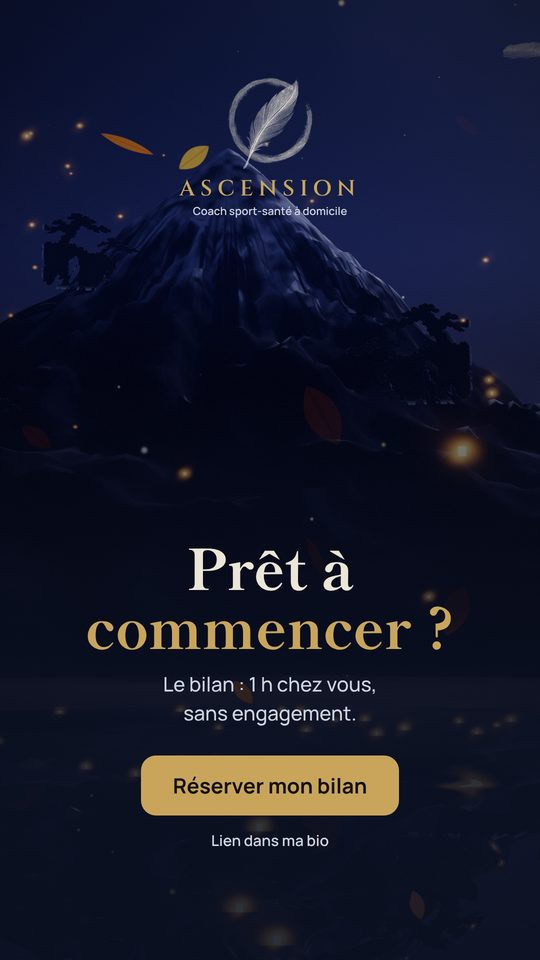

Droiture
Un bilan honnête, des objectifs réalistes.
Coach sport-santé à domicile · Paris
Je viens chez vous avec le matériel. Un programme qui s'adapte à vous : votre âge, votre forme, votre santé.
Le bilan : 1 h chez vous, 30€ après crédit d'impôt (60€), sans engagement.
Prestations
Des séances individuelles chez vous, construites à partir d'un bilan, à tout âge.
Se remettre au sport, rester en forme ou aller plus loin, à tout âge.
DécouvrirMal de dos, blessure, diabète, handicap, maladie chronique : des séances adaptées à votre situation.
DécouvrirBouger avec plaisir, prendre confiance, progresser.
DécouvrirComment ça se passe
En ligne, en deux minutes.
Une heure pour faire le point : votre forme, votre santé, vos objectifs, et quelques tests simples.
Des séances sur mesure, et les tests refaits régulièrement : vos progrès se voient, chiffres à l'appui.
Votre coach
Enseignant en activité physique adaptée et santé, je pratique le calisthenics depuis dix ans, après le football et les arts martiaux.
Ils en parlent
Exemples de mise en page : ces avis sont fictifs, à remplacer par les vôtres.
5,012 avis sur Google · exempleAprès mon opération du dos, je n'osais plus rien faire. Ilyas m'a remise en mouvement, en douceur, sans jamais me brusquer. Aujourd'hui je refais mes courses à pied.
Fini le mal de dos. Et mon premier équilibre sur les mains, à 42 ans.
Avant, ma fille avait peur du ballon. Maintenant elle fait la roue et court plus vite que son grand frère !
Ma mère a 82 ans. Elle se relève seule du sol, sans peur, et elle attend la séance toute la semaine.
Avec mon diabète, je ne savais pas par où commencer. Chaque séance est adaptée à ma forme du jour, et je me sens enfin en confiance.
Mon fils de 13 ans ne voulait plus entendre parler de sport. Il a repris confiance, et c'est lui qui me rappelle l'heure de la séance.
Le bilan dure une heure, chez vous, sans engagement.
Être en forme · à tout âge
Force, endurance, souplesse, posture, énergie et sommeil. Que vous repreniez le sport, que vous vouliez rester en forme ou aller plus loin (tractions, gainage, équilibre sur les mains), le programme part de vous, y compris après 60 ans.

Ils en parlent
Vos questions
Par le bilan. On part exactement de là où vous êtes, et les premières séances posent les bases : postures, respiration, mouvements simples. On augmente ensuite, à votre rythme.
Bien sûr. On entretient et on améliore votre condition physique : force, endurance, souplesse, équilibre. Le programme suit vos envies, pas votre âge.
Oui, c'est mon terrain de jeu depuis dix ans. On construit la force et la technique pas à pas, en sécurité, à partir de votre niveau.
Continuer l'ascension
Prendre soin de sa santé
Formé à l'activité physique adaptée (APA-S), je fais surtout bouger celles et ceux pour qui ce n'est pas simple : avec l'âge, une maladie chronique, un handicap. Chaque séance part de votre situation, sur prescription (sport sur ordonnance) ou non.
Ils en parlent
Vos questions
L'activité physique adaptée, c'est justement mon métier. Je tiens compte de vos douleurs, de vos traitements et des avis de votre médecin, et j'adapte chaque exercice. En cas de doute, on demande son feu vert avant de commencer.
C'est normal, et c'est justement ce qu'on travaille. Les exercices sont choisis pour votre niveau, avec un appui à portée de main, et je reste à côté de vous.
Oui. Vos enfants, votre conjoint ou un ami peuvent remplir la demande en choisissant « Pour un proche » ; je vous appelle ensuite pour fixer le bilan.
Continuer l'ascension
Enfants et ados · pour les parents
Motricité, coordination, vitesse de réaction, souffle, force et confiance en soi. Par le jeu, à son rythme.
Ils en parlent
Les questions des parents
C'est souvent là que ça marche le mieux. Tout passe par le jeu : défis, parcours, ballons, cordes. Il bouge sans s'en rendre compte, prend confiance, et l'envie revient à son rythme.
Oui, c'est le cœur de l'activité physique adaptée. Au bilan, on parle de sa santé, de ses traitements et des conseils de son médecin ; chaque exercice est ajusté, et on avance à son rythme.
Oui : vitesse, détente, force, gainage et prévention des blessures. On part de son sport et de ses objectifs, et les tests du bilan montrent ses progrès, chiffres à l'appui.
Continuer l'ascension
À propos
Formé à l'activité physique adaptée (APA-S), je fais surtout bouger celles et ceux pour qui ce n'est pas simple : avec l'âge, une maladie chronique, un handicap. Et aussi les enfants et les adultes qui veulent se remettre en forme.
J'ai grandi entre le football, les arts martiaux et la barre de traction.
Diplômes
Des diplômes universitaires et une carte professionnelle : vous savez qui entre chez vous.
Mon histoire
Quatre étapes, quatre estampes : ce qui m'a construit, et ce que j'apporte chez vous. Touchez une lune pour voir le geste suivant.
1 · Le ballon
Tout a commencé balle au pied : courir, dribbler, jongler. Le plaisir de bouger, avant tout.
2 · Le dojo
La discipline, le respect, la patience. Et surtout : tomber, se relever, recommencer.
3 · La barre
Tractions, équilibre sur les mains, saltos : le corps pour seul outil, et la gravité comme adversaire.
4 · Chez vous
Une licence STAPS à Toulon, puis l'activité physique adaptée et santé à Nanterre. Aujourd'hui, je mets tout ça au service de vos objectifs.
Continuer l'ascension
Ma philosophie
Progresser, ce n'est pas ne jamais tomber : c'est se relever à chaque fois. On repart de là où vous êtes, sans jugement, et on avance pas à pas.
Ma méthode
À chaque séance, on travaille les trois. Le dosage dépend de vous, et les tests du bilan sont refaits régulièrement : vos progrès se mesurent, chiffres à l'appui.
Force, mobilité, posture, solidité des os et des articulations.
Cœur, vaisseaux, souffle, récupération.
Équilibre, dissociation, réaction, orientation, rythme.
Mes principes
Les sept vertus du bushido : c'est ainsi que je travaille avec vous.
Un bilan honnête, des objectifs réalistes.
Oser recommencer, à son rythme.
Jamais de jugement, jamais de moquerie.
De votre corps, de vos douleurs, de votre histoire.
Je vous dis ce qui marche, et pourquoi.
Tenir parole : chaque séance compte.
Je reste à vos côtés, du bilan au sommet.
Continuer l'ascension
Tarifs
La séance d'1 h à domicile, matériel fourni. Avec le crédit d'impôt de 50 %, vous ne réglez que la moitié.
Avec l'avance immédiate de l'Urssaf, vous ne payez que votre moitié, directement.
Pour commencer
Zone d'intervention
Paris et la proche banlieue, jusqu'à une heure de transport depuis Paris 18e. Votre commune n'est pas sur la carte ? Écrivez-moi.
Depuis Paris 18e, à Montmartre.
Questions fréquentes
C'est la première étape de votre accompagnement. Je viens chez vous : un entretien santé (vos antécédents, vos douleurs, vos objectifs), puis des tests simples d'équilibre, de force, de souplesse et de souffle. Vous repartez avec votre point de départ et la suite du parcours.
Oui. On part exactement de là où vous êtes, et chaque séance s'adapte à votre forme du jour. J'accompagne de l'enfant au grand-parent, y compris après des années sans bouger.
L'activité physique adaptée, c'est justement mon métier. Je tiens compte de vos douleurs, de vos traitements et des avis de votre médecin, et j'adapte chaque exercice. En cas de doute, on demande son feu vert avant de commencer.
C'est souvent là que ça marche le mieux. Tout passe par le jeu : défis, parcours, ballons, cordes. Il bouge sans s'en rendre compte, prend confiance, et l'envie revient à son rythme.
Non. J'apporte le matériel : élastiques, tapis, petits accessoires. Un coin de salon, un jardin ou un parc près de chez vous suffit.
Les séances à domicile ouvrent droit au crédit d'impôt de 50 % des services à la personne. Avec l'avance immédiate de l'Urssaf, vous ne réglez que votre moitié, directement : inutile d'attendre la déclaration de l'année suivante.
Certaines mutuelles prennent en charge une partie des séances d'activité physique adaptée, surtout sur prescription médicale (le sport sur ordonnance). Renseignez-vous auprès de la vôtre : je vous fournis les factures nécessaires.
Souvent, le sommeil, l'énergie et l'aisance dans les gestes du quotidien s'améliorent dès les premières semaines. On refait régulièrement les tests du bilan : vous voyez, chiffres à l'appui, le chemin parcouru.
La prochaine étape
Réserver
Dites-moi pour qui, je vous rappelle pour fixer le bilan chez vous.
Vos coordonnées servent uniquement à vous recontacter. Confidentialité
Informations légales
Modèle à compléter : les éléments surlignés seront renseignés avec le SIRET et l'hébergement du site, puis le texte sera relu.
Ilyas nom de famille, entrepreneur individuel (statut : micro-entreprise ?)
SIRET : à compléter · Adresse : adresse de domiciliation · E-mail : ascension.santepro@gmail.com
Directeur de la publication : Ilyas nom de famille
Éducateur sportif et enseignant en activité physique adaptée et santé (APA-S), carte professionnelle d'éducateur sportif n° 08325ED0042.
Assurance responsabilité civile professionnelle : assureur et numéro de contrat
nom, adresse et téléphone de l'hébergeur du site
Les textes, illustrations et éléments graphiques de ce site sont protégés. Toute reproduction sans autorisation est interdite.
Les silhouettes animées ont été réalisées à partir de vidéos libres de droits (Pexels et Mixkit).
Vos données
Ce que deviennent les informations que vous me confiez. Modèle à compléter et à faire relire avant la mise en ligne.
Ilyas nom de famille, ascension.santepro@gmail.com.
Avec le formulaire de réservation : votre prénom, votre nom, votre téléphone, votre code postal et le nom de votre rue (sans le numéro), pour qui est l'accompagnement et l'âge de la personne accompagnée, ce qui vous amène, un message (facultatif) et le meilleur moment pour vous rappeler.
Uniquement pour vous recontacter, organiser le bilan et répondre à votre demande. Elles ne sont ni vendues, ni prêtées, ni utilisées pour de la publicité.
Si vous parlez de votre santé dans votre message, ces informations servent seulement à préparer le bilan. Ne les donnez que si vous le souhaitez.
Moi seul. Elles arrivent dans ma messagerie et, si l'envoi direct est activé, dans un tableau Google Sheets à confirmer.
3 ans après le dernier contact pour une demande sans suite ; pour les clients, le temps de l'accompagnement puis les durées imposées par la loi.
Vous pouvez demander à consulter, corriger ou supprimer vos données, ou vous opposer à leur utilisation, en écrivant à ascension.santepro@gmail.com. Vous pouvez aussi saisir la CNIL (cnil.fr).
Ce site n'utilise ni cookies publicitaires, ni mesure d'audience. Il garde seulement dans votre navigateur deux préférences pratiques (la lecture confort, et le fait d'avoir déjà vu l'ouverture).
Les polices de caractères sont chargées depuis Google Fonts, qui voit donc votre adresse IP au lancement : héberger les polices sur le site.
Conditions de vente
Les règles du jeu, simplement. Modèle à compléter et à faire relire.
Séances individuelles d'activité physique à domicile, à Paris et en proche banlieue, précédées d'un bilan d'une heure.
tarifs de la séance et des forfaits. TVA non applicable, article 293 B du CGI (si micro-entreprise).
moyens de paiement acceptés. Avance immédiate du crédit d'impôt via l'Urssaf, une fois déclaré en services à la personne.
délai pour prévenir (par exemple 24 h) et ce qui se passe en cas d'annulation tardive.
Vous me signalez tout problème de santé, traitement ou douleur avant et pendant l'accompagnement. En cas de pathologie, avis de votre médecin recommandé ou demandé.
14 jours pour un contrat conclu à distance ou à domicile ; si vous souhaitez commencer avant la fin de ce délai, vous le demandez par écrit.
En cas de litige, vous pouvez recourir gratuitement à un médiateur de la consommation : nom et coordonnées du médiateur.
Hors du site
Une carte de visite, un flyer pour les médecins, kinés et pharmacies du 18e, et trois modèles Instagram, dans le même univers que le site. Le QR code mène au site.




